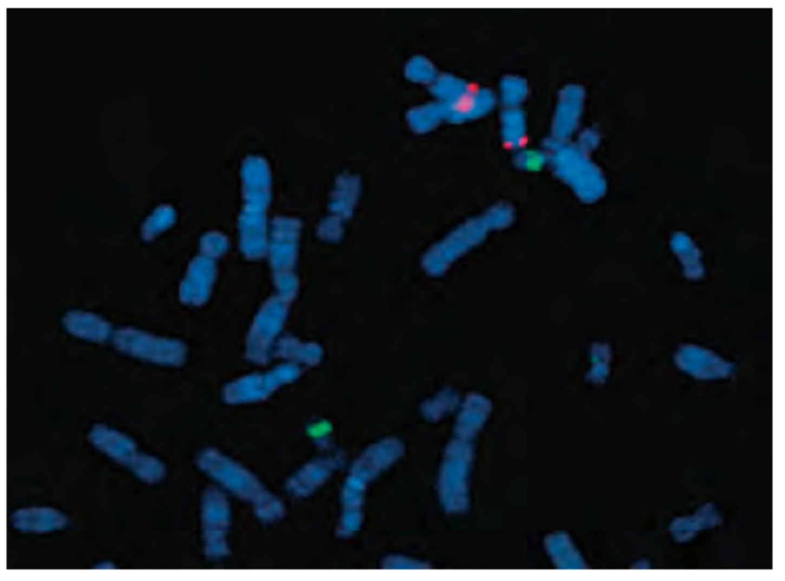

Phân biệt bản đồ hai điểm, bản đồ vật lý và chỉ thị
Di truyền · Liên kết và lập bản đồ · 4 trắc nghiệm và 1 tự luận
Bắt đầu học ↓Học trọn chương và làm bộ 80 trắc nghiệm, 15 tự luận
Sau buổi này
- Tính tái tổ hợp hai điểm từ số đếm và nhận diện pha.
- Chọn phép đo cho cM, tọa độ vật lý và bằng chứng nhân quả.
Gợi nhớ
Đổi một nhận định “15 cM” thành câu mô tả dữ kiện tạo ra nó. Đơn vị bp trả lời câu hỏi khác thế nào?
Học kiến thức qua hình
Quan sát hình minh họa

Ảnh lai tại chỗ trong slide. Chú thích nguồn chỉ tín hiệu đỏ liên quan đoạn trên NST 9 và xanh lục liên quan đoạn trên NST 22. Nguồn ảnh ghi Applied Imaging Corp.
Quan sát · Tách màu nền của NST khỏi hai màu tín hiệu định vị. Xác định chúng có rải đều trên mọi NST hay tập trung ở vài vị trí.
Dự đoán · Từ ảnh có thể nói vị trí tín hiệu trên NST hay suy ngay khoảng tái tổ hợp cM?
Mở giải thích sau khi dự đoán
Ảnh giúp trả lời vị trí vật lý của tín hiệu ở phạm vi phân giải. Để tính khoảng di truyền cM cần dữ liệu tái tổ hợp trong một thiết kế phù hợp.
| Bằng chứng | Đơn vị hoặc kiểu dữ kiện | Câu hỏi trả lời |
|---|---|---|
| Lai phân tích | AB 88, ab 82, Ab 17, aB 13 | Pha allele và r trong phép lai |
| Định vị trên trình tự | 1,2 Mb trong một bộ tham chiếu giả định | Khoảng vật lý trong bộ tham chiếu |
| Dấu ngoài phép lai | Chỉ thị thường gặp cùng tính trạng | Liên hệ quan sát; cần thêm dữ kiện để kết luận cơ chế |
Số đếm mô phỏng theo Linkage PDF tr. 8–17, 24–28, 46–57.
Đọc hình để tự rút ra cơ chế
Quan sát · Hai lớp lớn chiếm 170/200 con.
Dự đoán · Nếu hai đầu xa và có nhiều trao đổi, tần số tái tổ hợp có tăng mãi đến 100%?
Mở giải thích sau khi dự đoán
Tần số quan sát có giới hạn 50% trong mô hình hai locus, có thể bỏ sót nhiều lần trao đổi khôi phục pha.
Pha và công thức hai điểm
Ở lai phân tích AB/ab × ab/ab, hai lớp bố mẹ AB và ab mang pha cùng. Hai lớp Ab và aB tái tổ hợp. Cơ sở tính: 200 con; số Ab + aB = 17+13 = 30. r=30/200=0,15=15% ≈ 15 cM theo quy ước gần đúng. Kiểm: các lớp cộng đủ 200 và r < 50%. Bản đồ ba điểm ở SHPT-06 giúp quan sát một phần các trao đổi kép.
Ba câu hỏi cần dữ kiện khác
Lai phân tích cho số tái tổ hợp; định vị bằng tín hiệu NST hoặc tọa độ trình tự cho vị trí vật lý; chỉ thị đồng di truyền/gắn kết với tính trạng có thể nằm gần nguyên nhân nhưng chưa tự xác định nhân quả. Phần mất đoạn có thể khoanh vùng trong mô hình có đối chứng, với giả thiết không có ảnh hưởng nền khác.
Liên hệ thực tế
Một gen có thể nằm gần chỉ thị trên bản đồ di truyền mà khoảng vật lý thay đổi mạnh giữa vùng; chọn đơn vị theo câu hỏi.
Cụm bài tập
Bảng lai và hai nguồn lập bản đồ
Dùng số đếm trong bảng ngay bên dưới. Giả thiết con sống như nhau và rõ kiểu hình. Khoảng 1,2 Mb là số liệu mô phỏng của một phép đo riêng.
| Bằng chứng | Đơn vị hoặc kiểu dữ kiện | Câu hỏi trả lời |
|---|---|---|
| Lai phân tích | AB 88, ab 82, Ab 17, aB 13 | Pha allele và r trong phép lai |
| Định vị trên trình tự | 1,2 Mb trong một bộ tham chiếu giả định | Khoảng vật lý trong bộ tham chiếu |
| Dấu ngoài phép lai | Chỉ thị thường gặp cùng tính trạng | Liên hệ quan sát; cần thêm dữ kiện để kết luận cơ chế |
Đối chiếu bài làm
Chọn một chỗ còn phân vân. Giải thích lại bằng lời của mình rồi thử một câu cùng dạng.